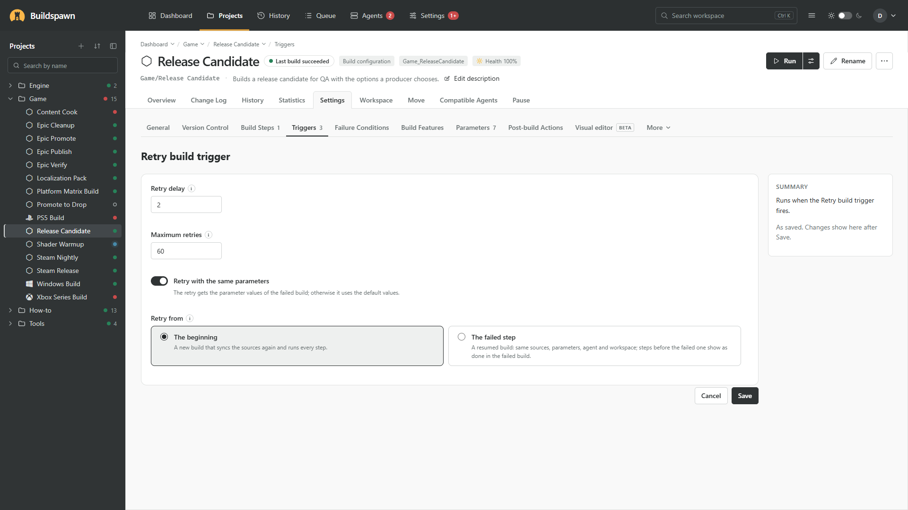

Retry build trigger
Starts a failed build again after a delay.
When to use it
Use it for builds that sometimes fail for reasons outside your code, such as a busy network share or a license server that is slow.
How to set it up
- Open the build configuration and go to Settings › Triggers.
- Click Add new trigger and click Add next to Retry build trigger.
- Set Retry delay and Maximum retries.
- Tick or untick Retry with the same parameters.
- Choose Retry from: The beginning or The failed step.
- Click Save.

Every field
| Field | What it does | Default | Example |
|---|---|---|---|
| Retry delay | Seconds to wait after a failed build before the retry starts. 0 or more. | 10 | 60 |
| Maximum retries | How many times a failed build is retried. A retry that fails again counts against the same limit. 1 or more. | 3 | 2 |
| Retry with the same parameters | The retry gets the parameter values of the failed build. Otherwise it uses the defaults. | On | On |
| Retry from: The beginning | A new build that syncs the sources again and runs every step. | The beginning | - |
| Retry from: The failed step | A resumed build: same sources, parameters, agent and workspace. Steps before the failed one show as done in the failed build. If it cannot be resumed (the agent is offline, the workspace is gone or another build used it), the retry starts from the beginning and its cause says why. | - | The failed step |
A worked example
The Windows Build sometimes fails while it copies files from the share. Set delay 60, maximum retries 2 and The failed step. The cook step is not run again if it was done.
What you see when it runs
The row reads Up to 2 times · 60 s apart · from the failed step. The console of the failed build says Retry 1 of 2 scheduled in 60 seconds: it resumes this build at the failed step. The retry's cause says Retry 1 of 2 after failure of #12. When the limit is reached the log says Not retrying: the build was already retried 2 times.
Problems and fixes
| Problem | What to do |
|---|---|
| No retry happens | Only a result of Failure is retried (not Unstable or Aborted). A personal build and a side build of a Parallel block are not retried by themselves. The build configuration must be able to build (not disabled). |
| The retry starts from the beginning | The console says why: agent offline, workspace gone or used by another build. |